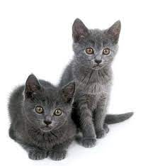

|  |
| Chartreux |
BEHAVIOR
They can open door latches on screen doors, and are very intelligent cats. They are very observant and athletic. Adulthood is at around age two years of age. This cat breed enjoys traveling. The Chartreux does well with family, strangers, other pets, and children. Chartreux kittens are active and playful. Senior cats tend to enjoy watching, and are much less active. This cat breed is perfect for either apartment or farm living. They are quiet cats that enjoy interactive play. The Chartreux enjoys playing with anything that is lying around, and is playful when there is someone to play with. This wonderful cat breed is super soft to cuddle with, and is easy to live with. The Chartreux needs plenty of love, fun cat toys, and mental stimulation. This cat breed is very vocal.
GROOMING
The Chartreux needs daily grooming to remove shedding or dead hair. Because this breed has a short and fine, soft coat, grooming is easy. Stainless steel combs help to remove dead hair. Care must be taken when grooming leg hair and body hair to avoid sensitive areas. Some cats have very sensitive areas along their backs, legs, and belly area. Curry brushes help with grooming, and will remove dead hair and debris from your cat’s coat.
HEALTH PROBLEMS
The Chartreux is a healthy and moderately active cat breed that may be susceptible to the following health conditions:
- Hip Dysplasia: This is rare in domestic cats, and is common in purebred cats. This occurs when the hip joint is loose, and leads to degenerative joint disease. (osteoarthritis) Symptoms include lameness that can be mild to severe. Cats generally need no surgery for hip dysplasia. Weight reduction can help reduce discomfort.
- Ringworm: This is an infection of the skin, hair, or claws, and is caused by a fungus called dermatophyte. This occurs in 98% of cats. It spreads easily from cats to people. Symptoms include circular, bald patches that scale and have broken hairs in a ring-like fashion. Consult with your veterinarian for advice.
- Hypertrophic Cardiomyopathy: This is a heart muscle disorder where the heart walls of the left ventricle thicken. This results in the walls becoming stiffer. This is a common primary heart disease in cats. It tends to get noticed at around 3 months to 17 years of age. Most cats will be middle aged when this disorder occurs. This disorder tends to affect males more than females, and it is an inherited genetic defect. Symptoms may include difficulty breathing, weakness or paralysis of the hind limbs. Fluid may also accumulate in the lungs, and in the space between the lungs and chest wall. Veterinary treatment will aim at improving cardiac function, and reducing blood clots. There is a good long-term outlook for mildly affected cats. Consult with your veterinarian for advice.
- Gingivitis: This is when the gums become inflamed due to bacterial plaque. At this stage the ligaments and bone are not infected. Gum color in cats will change from a light pink to red or purple. The gum edge wills well. Symptoms include bleeding and bad breath. This can be reversed with proper teeth cleaning. That said, it can worsen and result in periodontitis. Consult with your veterinarian for an effective treatment plan.
NUTRITION
Always take notice of your cat’s eating behavior. If your Chartreux suddenly has a lack of appetite, it could indicate a serious illness. That said, if after a day, he’s still not eating, visit your veterinarian.
Fresh, clean water needs to always be on hand for your cat. Canned cat food contains moisture, yet water should never be withheld from your cat. By feeding the proper amounts of cat food, you’ll also prevent your cat from becoming obese. Healthy cats are less prone to heart disease, arthritis, and a shorter lifespan.
The Chartreux cat breed will need proper nutrition. That said, a high-quality diet that is appropriate for the specific life stage of the cat is necessary. Protein as an ingredient, needs to come first. Dry cat food is a popular choice because it promotes healthier gums and teeth. Yet, wet food is highly recommended by veterinarians because it provides more moisture to cats. Cats don’t drink a lot of water and tend to sometimes get dehydrated. Wet cat food also has its benefits. By choosing a well-known name- brand cat food that has scientific backing, as well as quality control, cat parents can be assured that they are providing a well-balanced diet.